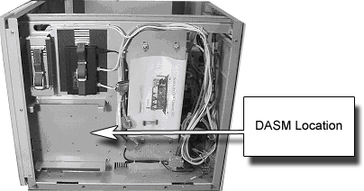
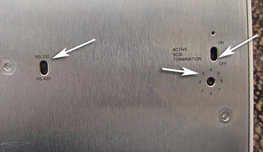
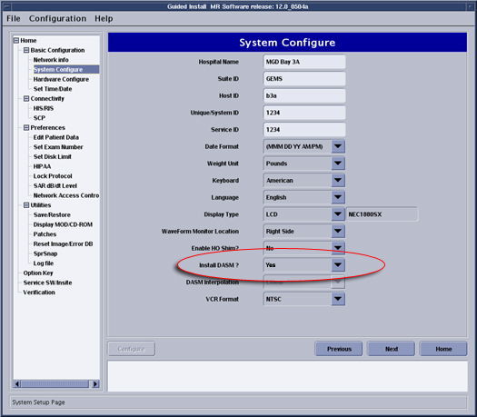

Operating Documentation
Direction 5440001-3, Rev# 6
Signa HDxt Service Methods
Module Version 1.0, Version Date 4/17/07
Operating Documentation |
| Required Persons | Preliminary Reqs | Procedure | Finalization |
|---|---|---|---|
| 1 | Not Applicable | 30 mins | Not Applicable |
| Last Updated | 08/27/2005 |
| Item | Qty | Effectivity | Part# | Manufacturer | |
|---|---|---|---|---|---|
| Standard Tool Set | 1 | - | - | - | |
| ||||
| Electrical Shock hazard! | ||||
| Dangerous voltages are present inside the Global Operator Console (GOC) when energized. | ||||
| Remove power from the GOC at the power distribution unit, lockout and tagout before opening the GOC. |
| Condition | Reference | Effectivity |
|---|---|---|
- | - |
Shutdown the host computer. Remove power from the GOC. See LOTO Global Operator Console / Operator Workspace.
Remove the Right cover of the GOC. Install the DASM as shown in Illustration 1.
Illustration 1: DASM Location in GOC

Connect existing SCSI cable to the DASM. Other end of the cable runs to Linux PC.
Connect provided power cord into DASM.
Close up the GOC. Remove Lockout/Tagout from the PDU and reapply power to the GOC.
Boot Signa back up to scanning level.
Flip DASM over. Set the Switches on the bottom of the DASM to the following. See Illustration 2.
RS232
Active Termination to OFF (Physical terminator must be used)
Rotary switch to 3.
Illustration 2: DASM Settings

Go to the Service Desktop and start the Common Service Browser if it is not already running. Go to the [Configure] Tab, then Click [Guided Install], then click [FE Mode]. The password is: operator.
When the Guided Install menu opens, click on [System Configure]. Select the option Install DASM, then select [Yes]. See Illustration 3.
Illustration 3: Configuring the DASM

No finalization steps.